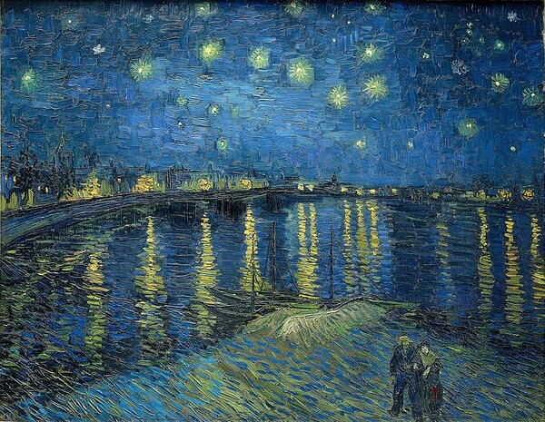

Soft Light in the Dark

지금 마음이 많이 무겁고, 설명하기 어려운 슬픔이 가슴 한켠에 자리하고 있을지도 몰라요. 괜찮아요. 그 슬픔은 절대
잘못된 감정이 아니에요. 눈물은 감정을 씻어내는 방법 중 하나일 뿐이에요. 참지 않아도 되고, 무리해서 밝게 보이지
않아도 괜찮아요. 이곳에서는 조용히 머물러도 괜찮고, 아무 말 없이 앉아 있어도 괜찮아요. 지금 이 순간조차도 언젠가
지나갈 거예요. 그러니 지금은 그저 스스로를 조용히 안아주세요. 당신이 지나온 날들만큼, 앞으로도 충분히 잘 걸어갈
수 있어요.
Vincent Willem van Gogh, [ Starry Night Over the Rhone
] 1888
출처 : 데일리아트 Daily Art(https://www.d-art.co.kr)
하단에 내용넣기
.